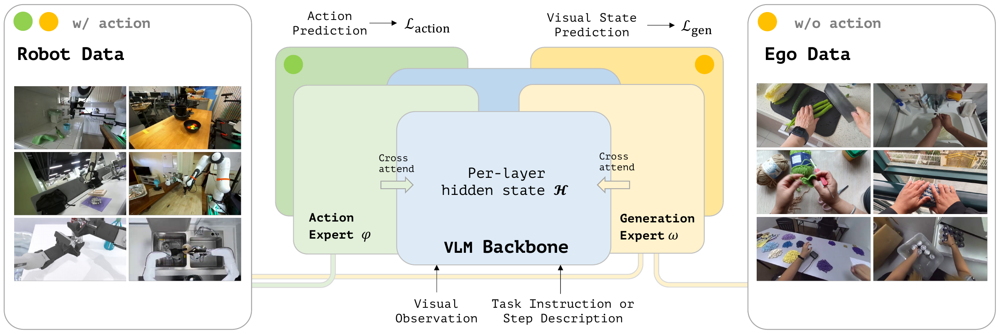
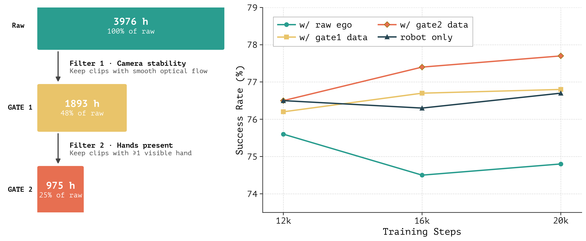
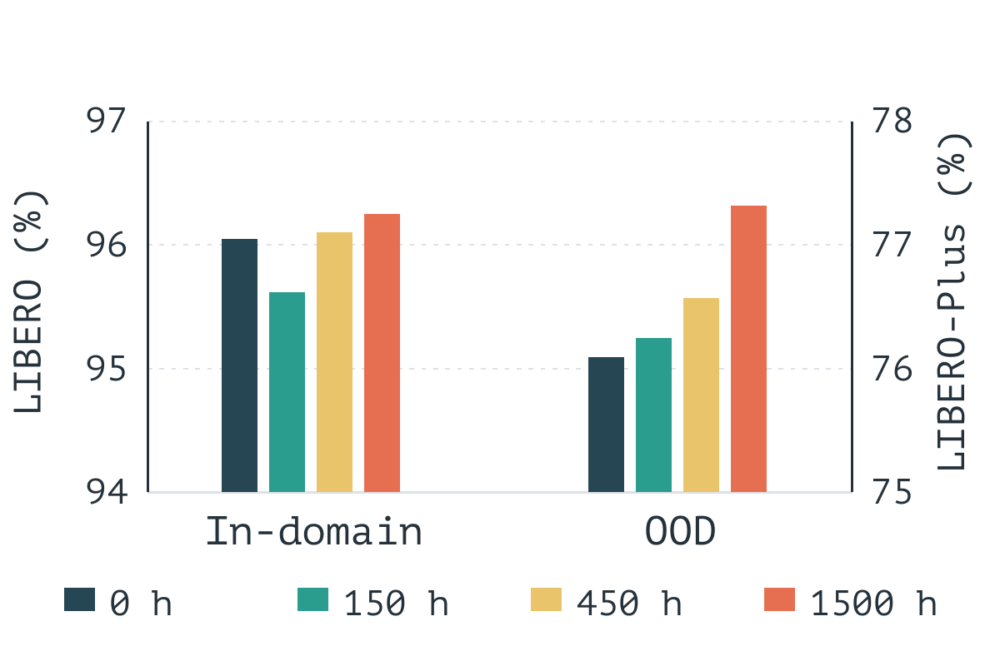
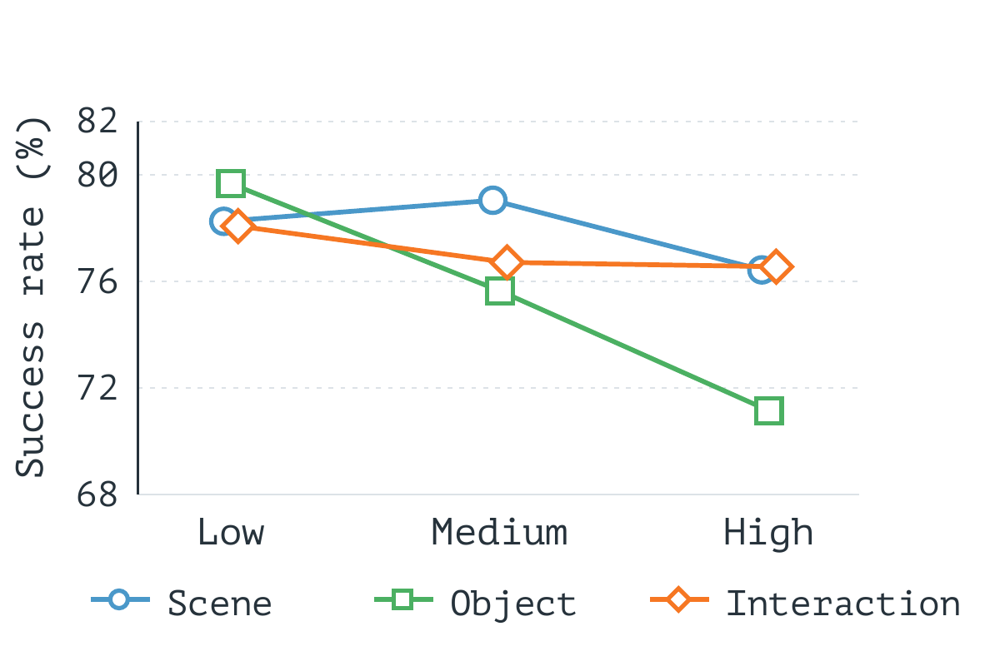

Action-free video for robot learning
Ego Guidance
Enhancing Robot Policy Learning with Action-Free Human Egocentric Videos
* Equal contribution
Can inexpensive, readily available human egocentric videos benefit embodied tasks without explicit action annotations? We design an architecture to uncover the implicit mutual information between actions and video, and explore its potential for generalization and scaling.
01 / Method
One backbone, two experts
We introduce Shared Prediction on Action and Representation (SPAR), a VLM-based Mixture-of-Transformers that uses action prediction and future visual-state prediction as complementary proxy tasks to optimize the shared backbone.

02 / Data curation
The right clips matter

Raw Ego4D video trails the robot-only baseline. After both quality gates, the retained 975 hours produce the strongest OOD result at later training steps.
03 / Data ablations
More video, broader generalization


OOD success keeps rising across the tested 0–1,500 hours: the scaling curve shows no sign of saturation yet. At a fixed 200K-pair budget, increasing any one diversity measure gives no consistent gain. Expanding the amount and coverage of action-free video remains a promising direction.
04 / Real-world results
Nearly matching π0.5 on physical robots
Across five bimanual manipulation tasks, SPAR succeeds in 20/50 trials (40%), close to 22/50 (44%) for π0.5.
05 / Citation
Cite this work
@article{long2026egoguidance,
title={Ego Guidance: Enhancing Robot Policy Learning with Action-Free Human Egocentric Videos},
author={Long, Lin and Ma, Tianren and Chu, Zhong and Wu, Di and Cao, Maosong and Ye, Qixiang and Zhao, Junbo and Zhang, Shanghang},
journal={arXiv preprint arXiv:2611.13685},
year={2026},
eprint={2611.13685},
archivePrefix={arXiv},
url={https://arxiv.org/abs/2611.13685}
}